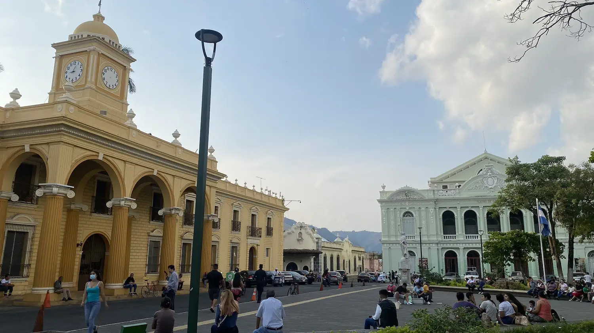

Santa Ana is one of the most important cities in western El Salvador and the second-largest city in the country. Known as “La Ciudad Morena,” it has a rich history connected to the coffee boom of the late 19th and early 20th centuries, which helped shape its elegant architecture and cultural identity. The city is famous for landmarks such as the impressive Santa Ana Cathedral and the historic Santa Ana National Theater. It also serves as a gateway to natural attractions like Ilamatepec Volcano and Lake Coatepeque, making it a key cultural, economic, and tourism center in the region. (Generated with ChatGPT)
